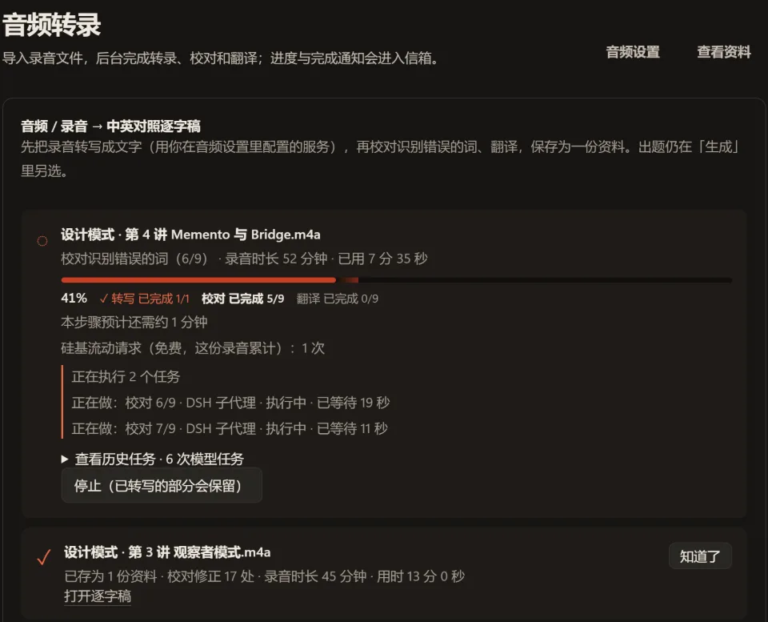
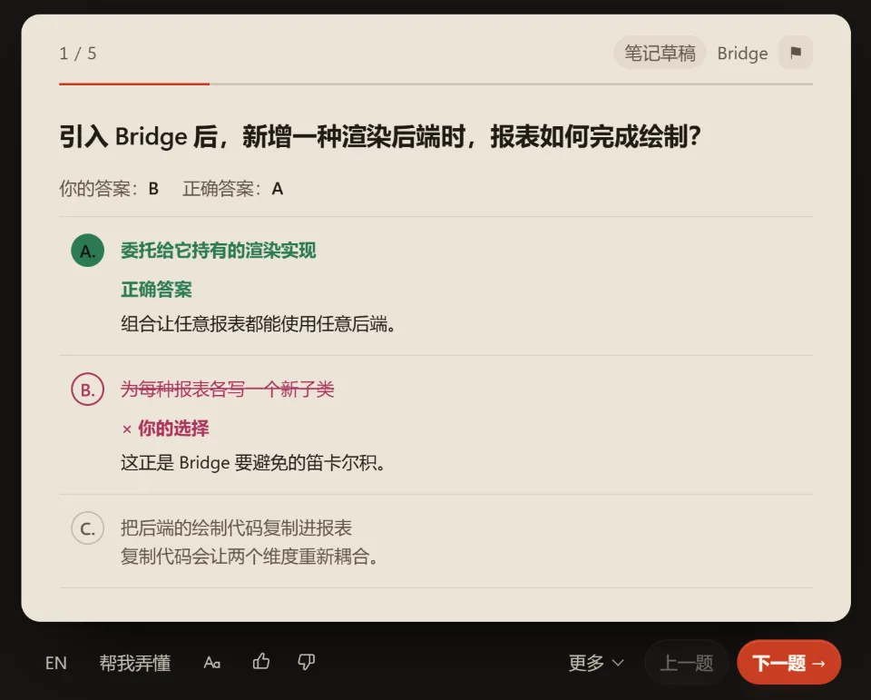

自己的资料，
扎实地学
把课程资料、课堂录音和已有题目，变成能回到原文核对的练习。读资料、检查草稿、答题和复习，在 DeepSeek Harness（DSH）里连起来。
演示用示例资料和预置回复，无需模型密钥；它不是你的真实学习库。
Caretaker 保管快照，不读取也不修改内容。保管历史与恢复状态，需要不同的访问权限。
为什么 Caretaker 和 Originator 需要不同的快照访问权限？
先看依据，
再相信答案
AI 可以写出看似合理的题目。StudyHub 把选中的资料、考点、题目和审阅结果连在一起，让你检查答案为什么成立。
程序检查引用位置、题目结构和部分质量问题；模型审阅内容。这能发现一些缺陷，不能保证每个答案正确。草稿显示遗漏原因，资料不足时不会凭空补足数量。
为什么快照的保管者不应读取内容？
来源：根据相关资料整理
课件、笔记、录音，
放进同一门课
导入 PDF、Word（.docx）、PowerPoint（.pptx）、Markdown、HTML 或 TXT；已有题目可以用 JSON 导入。按文档、页或章节选出题范围，课程设置保存评分说明、重点主题和考试时间。
普通 PDF 入口限 8 MB / 200 页，Word 和 PowerPoint 限 40 MB 且只提取文字。大书可用 MinerU 转换或导入转换结果；云端转换会上传 PDF，需先同意。图片、扫描件和复杂排版要核对提取结果。
录音和字幕走音频组件；实时课堂转录目前需要 Gemini。转录、校对和翻译是不同步骤，密钥与收费由对应服务商决定。 录音说明 ↗

从原文到练习，
每一步可检查
闪卡、单选、多选、填空、开放问答，还有带评分标准的案例分析。常规出题会规划考点、分批写题、独立审阅，并保留通过的结果；审阅失败、资料不足或时间用完，都会报告实际完成数量。
快照保存对象过去的状态。 Caretaker 保管快照，不读取也不修改内容。 Originator 读取快照，恢复自身状态。
为什么 Caretaker 和 Originator 需要不同的快照访问权限？
点一下，查看这道题的依据
这是可操作的机制示例，不读取你的文件。真实引用能打开相应原文与位置；资料更新后，当前列表使用新版，带旧来源或版本的历史引用仍可读旧文。
草稿默认“保存并发布”不等待新的模型审阅，未审阅题会标明状态；需要严格检查时使用审阅发布。补题保留既有进度，有缺陷的题留在草稿中，可继续生成或后台修复。 审阅与发布说明 ↗
答完题，
把没懂的地方弄清楚
客观题按规则判分，案例题按评分标准调用模型批改。读解析、打开原文，或点“帮我弄懂”请陪学助手给出解释、例子和小检查；学习流把短讲解与练习排在一起。
错题与待巩固、统计和模拟考试帮助找薄弱点。模拟考试包含客观题卷、案例卷和口头面试；案例时间默认继承课程设置，也可按本次练习调整。
陪学、追问、改题和变式会调用模型。改题可能改变学习目标与评分依据，进度是否保留取决于内容变化；先看改动和结果，再继续练习。

一门课的资料与题，
能互相找到
课程组织资料与题组；原文中的段落和表格可以找到关联题目与讲解。知识骨架、笔记和任务保存学习过程，前置题关系把一个问题拆成可练的步骤。
前置关系可编辑，循环会被拒绝。通过一道题时，两层内符合条件的前置题会得到一次通过记录；尚未到期且不薄弱的题不动。下面只展示这条规则，不代表真实学习成绩。
什么时候再练，
由作答与设置决定
SM-2 用作答评分、间隔和难度系数安排复习。今日学习优先考虑到期与薄弱题，再加入新题；课程路径、复习、模拟考试各有自己的选题方式，轮次与新题上限可配置。
掌握度从复习状态和有效作答推算，不是考试认证。常规题间隔达到 6 天显示“熟悉”、21 天显示“已掌握”；自评 5 分可立即标为已掌握，仍按间隔复习。
使用产品的默认排期函数：答对计 4 分，答错计 1 分。仅存在网页内存中。
资料存在哪里，
费用花在哪里
学习库存为运行 DSH 的电脑或服务器上的文件夹。选中的资料、题目与作答会在对应 AI 功能中发给模型；音频发给转录服务，选择 MinerU 云转换时 PDF 发给 MinerU。本地存储不等于所有处理都离线。
生成前的 token 估算在本地计算，完成后显示能取得的实际用量；推理程度、重试、分批与服务商缓存都会影响费用。Claude、ChatGPT 或 Codex 订阅不能直接当成 DSH 的 API 密钥；Coding Plan 是否允许学习用途，要看服务商条款。
备份包含资料、题目与复习记录；按引用附加的外部原文件不会被复制进备份。转录密钥放在学习库外，不进入导出。可选检索扩展使用本地索引。 数据与隐私 ↗ · 用量说明 ↗
浏览资料、客观题判分和复习排期无需等待模型。出题在后台进行，通过检查的结果会保留；速度取决于设备、资料规模和模型响应。
先装 DSH，
再启用 StudyHub
已有 DSH 就只装插件，保留现有会话、模型、工作区和配置。StudyHub 使用 DSH 0.2（≥0.2.0-rc.2，<0.3）；DSH 与 StudyHub 的版本号不同。
桌面安装包：Windows x64、macOS Apple silicon。其他平台查看 DSH 当前支持，或用 Node.js ≥22.19 启动网页 DSH；桌面安装包自带运行时。 DSH 官方页面 ↗
npx @deepseek-ai/dsh web
本页对应本地待发布的 2.5.10。下载链接指向最近已发布版本；只有发布完成后才会提供 2.5.10 包。